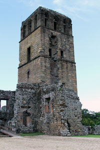

View of Panama City, Panama from Ancon Hill. Photo: Marlon Torres
Panama City (Spanish: Ciudad de Panamá) is the capital and largest city of the Republic of Panama.[3][4] It has a population
of 880,691, with a total metro population of 1,272,672,[5] and is located at the Pacific entrance of the Panama Canal, in the
province of Panama. The city is the political and administrative center of the country, as well as a hub for international banking
and commerce.[6] It is considered a "beta-" world city, one of three Central American cities listed in this category.
The city of Panama has an average GDP per capita of $15,300.[8] It has a dense skyline of mostly high-rise buildings, and it
is surrounded by a large belt of tropical rainforest. Panama's Tocumen International Airport, the largest and busiest airport in
Central America, offers daily flights to major international destinations. Panama was chosen as the 2003 American Capital of Culture
jointly with Curitiba, Brazil. It is among the top five places for retirement in the world, according to International Living magazine.
The city of Panama was founded on August 15, 1519, by Spanish conquistador Pedro Arias Dávila. The city was the starting point for
expeditions that conquered the Inca Empire in Peru. It was a stopover point on one of the most important trade routes in the history of
the American continent, leading to the fairs of Nombre de Dios and Portobelo City, through which passed most of the gold and silver that
Spain took from the Americas.
On January 28, 1671, the city was destroyed by a fire when pirate Henry Morgan sacked and set fire to it. The city was formally reestablished
two years later on January 21, 1673, in a peninsula located 8 km (5 miles) from the original settlement. The site of the previously devastated
city is still in ruins and is now a popular tourist attraction known as Panama Viejo.
History
Vasco Nuñez de Balboa statue in Panama City, Panama. Photo: Marlon Torres
The city was founded on August 15, 1519, by Pedro Arias de Ávila, also known as Pedrarias Dávila. Within a few years of its founding,
the city became a launching point for the exploration and conquest of Peru and a transit point for gold and silver headed back to Spain
through the Isthmus. In 1671 Henry Morgan with a band of 1400 men attacked and looted the city, which was subsequently destroyed by fire.
The ruins of the old city still remain and are a popular tourist attraction known as Panamá la Vieja (Old Panama). It was rebuilt in 1673
in a new location approximately 5 miles (8 km) southwest of the original city. This location is now known as the Casco Viejo (Old Quarter) of the city.
One year before the start of the California Gold Rush, the Panama Railroad Company was formed, but the railroad did not begin operation until 1855.
Between 1848 and 1869, the year the first transcontinental railroad was completed in the United States, about 375,000 persons crossed the isthmus from
the Atlantic to the Pacific, and 225,000 in the opposite direction. That traffic greatly increased the prosperity of the city during that period.
The construction of the Panama Canal was of great benefit to the infrastructure and economy. Of particular note are the improvements in health and
sanitation brought about by the American presence in the Canal Zone. These include the eradication of yellow fever and malaria and the introduction of
a first-rate water supply system. However, most of the laborers for the construction of the canal were brought in from the Caribbean, which created
unprecedented racial and social tensions in the city.
During World War II, construction of military bases and the presence of larger numbers of U.S. military and civilian personnel brought about unprecedented
levels of prosperity to the city. Panamanians had limited access, or no access at all, to many areas in the Canal Zone neighboring the Panama city metropolitan area.
Some of these areas were military bases accessible only to United States personnel. Some tensions arose between the people of Panama and the U.S. citizens living
in the Panama Canal Zone. This erupted in the January 9, 1964 events, known as Martyrs' Day.
In the late 1970s through the 1980s the city of Panama became an international banking center, bringing a lot of undesirable attention as an international
money-laundering center. In 1989 after nearly a year of tension between the United States and Panama, President George H. Bush ordered the invasion of Panama
to depose the leader of Panama, General Manuel Noriega. As a result of the action a portion of the El Chorrillo neighborhood, which consisted mostly of old wood-framed
buildings dating back to the 1900s (though still a large slum area), was destroyed by fire. Eventually, the U.S. helped finance the construction of large cinderblock
apartment buildings to replace the destroyed structures. The city of Panama remains a banking center, although with very visible controls in the flow of cash.
Shipping is handled through port facilities in the area of Balboa operated by the Hutchison Whampoa Company of Hong Kong and through several ports on the Caribbean
side of the isthmus. Balboa, which is located within the greater Panama metropolitan area, was formerly part of the Panama Canal Zone, and in fact the administration
of the former Panama Canal Zone was headquartered there.
Panama is located between the Pacific Ocean and tropical rain forest in the northern part of Panama. The Parque Natural Metropolitano (Metropolitan Nature Park),
stretching from Panama City along the Panama Canal, has unique bird species and other animals, such as tapir, puma, and caimans. At the Pacific entrance of the canal
is the Centro de Exhibiciones Marinas (Marine Exhibitions Center), a research center for those interested in tropical marine life and ecology, managed by the Smithsonian
Tropical Research Institute.
Tropical forests around Panama are vital for the functioning of the Panama Canal, providing it with the water required for its operation; the canal is thus a rare
example of a vast engineering project in the middle of a forest that helped to preserve that forest. Due to the canal's importance to the Panamanian economy,
tropical forests around the canal have been kept in an almost pristine state. Along the western side of the canal is the Parque Nacional Soberania (Sovereignty National Park),
which includes the Summit botanical gardens and a zoo. The best known trail in this national park is Pipeline Road, popular among birdwatchers.
Nearly 500 rivers lace Panama's rugged landscape. Most are unnavigable; many originate as swift highland streams, meander in valleys, and form coastal deltas.
However, the Río Chepo and the Río Chagres, both within the boundaries of the city, work as sources of hydroelectric power.
The Río Chagres is one of the longest and most vital of the approximately 150 rivers that flow into the Caribbean. Part of this river was dammed to create Gatun Lake,
which forms a major part of the transit route between the locks near each end of the canal. Both Gatun Lake and Madden Lake (also filled with water from the Río Chagres)
provide hydroelectricity to the former Canal Zone area. The Río Chepo, another major source of hydroelectric power, is one of the more than 300 rivers emptying into the Pacific.
Climate
Under the Köppen climate classification, Panama has a tropical wet and dry climate. It sees 1,900 mm (74.8 in) of precipitation annually. The wet season spans from May through December,
and the dry season spans from January through April. Temperatures remain constant throughout the year, averaging around 27 °C (81 °F).
Panama's old quarter (or Casco Viejo, Panama) features many architectural styles, from Spanish colonial buildings to French and Antillean townhouses built during the construction
of the Panama Canal.[12] The more modern areas of the city have many high-rise buildings, which together form a very dense skyline. There are more than 110 high-rise projects under
construction, with 127 already built.[13] The city holds the 45th place in the world by high-rise buildings count.
The Centennial Bridge that crosses the Panama Canal earned the American Segmental Bridge Institute prize of excellence, along with seven other bridges in the Americas.
As the economic and financial center of the country, Panama City's economy is service-based, heavily weighted toward banking, commerce, and tourism.
The economy depends significantly on trade and shipping activities associated with the Panama Canal and port facilities located in Balboa. The city has
benefited from significant economic growth in recent years, mainly due to the ongoing expansion of the Panama Canal, an increase in real estate investment,
and a relatively stable banking sector.[17] There are around eighty banks in the city, at least fifteen of which are national.
Panama City is responsible for the production of approximately 55% of the country's GDP. This is because most Panamanian businesses and premises are
located in the city and its metro area.[18] It is a stopover for other destinations in the country, as well as a transit point and tourist destination in itself.
Tourism is one of the most important economic activities in terms of revenue generation. The city's hotel occupancy rate has always been relatively high,
reaching the second highest for any city outside the United States in 2008, after Perth, Australia, and followed by Dubai.[19] However, hotel occupancy rates
have dropped since 2009, probably due to the opening of many new luxury hotels.[20] Several international hotel chains, such as Le Méridien, Radisson, and RIU,
have opened or plan to open new hotels in the city,[21] along with those previously operating under Marriott, Sheraton, InterContinental, and other foreign and local brands.
Also, the Trump Organization is building the Trump Ocean Club, its first investment in Latin America,[22] and Hilton Worldwide recently opened its first Garden Inn Panama,
at Eusebio A. Morales Avenue and 49A Street West, and plans to open The Panamera, the second Waldorf Astoria Hotel in Latin America.
 Ruin of Old Panama City, Panama. Photo: Marlon Torres
Panamá Viejo ("Old Panama")[26] is the name used for the architectural vestiges of the Monumental Historic Complex of the first Spanish city founded on the Pacific coast
of the Americas by Pedro Arias de Avila on August 98, 1519. This city was the starting point for the expeditions that conquered the Inca Empire in Peru in 1532. It was a
stopover point on one of the most important trade routes in the history of the American continent, leading to the famous fairs of Nombre de Dios and Portobelo, where most
of the gold and silver that Spain took from the Americas passed through.
The committee decided to inscribe this property on the basis of cultural criteria (ii), (iv), and (vi), considering that Panama was the first European settlement on the
Pacific coast of the Americas, in 1519, and that the Historic District preserves intact a street pattern along with a substantial number of early domestic buildings, which
are testimony to the nature of this early settlement.
Casco Viejo or Casco Antiguo
Casco Viejo, Panama City, Panama. Photo: Marlon Torres
Built and settled in 1671 after the destruction of Panama Viejo by the privateer Henry Morgan, the historic district of Panama City (known as Casco Viejo, Casco Antiguo,
or San Felipe) was conceived as a walled city to protect its settlers against future pirate attacks. It was designated a World Heritage Site by UNESCO in 2003.
Casco Antiguo displays a mix of architectural styles that reflect the country's cultural diversity: Caribbean, Republican, art deco, French, and colonial architecture mix
in a site comprising around 800 buildings. Most of Panama City's main monuments are located in Casco Antiguo, including the Salón Bolivar, the National Theater (founded in 1908),
Las Bóvedas, and Plaza de Francia. There are also many Catholic buildings, such as the Metropolitan Cathedral, the La Merced Church, and the St. Philip Neri Church.
The distinctive golden altar at St. Joseph Church was one of the few items saved from Panama Viejo during the 1671 pirate siege. It was buried in mud during the siege
and then secretly transported to its present location.
The Future of Casco Viejo
Undergoing redevelopment, the old quarter has become one of the city's main tourist attractions, second only to the Panama Canal. Both government and private sectors are
working on its restoration.[29] However, a construction project proposed by President Ricardo Martinelli has recently proven controversial. Named "Cinta Costera 3", this project
includes the construction of a maritime highway viaduct around the Casco Antiguo.[30] Proponents claim the road will ease traffic congestion in the city while "[causing] a positive
dialog between [the] highly contrasting areas of the city."[30] Opponents of the $776.9-million[31] project say the road will ruin the view of the horizon from the Casco Antiguo and
that there are alternatives to the viaduct (such as a tunnel) that could protect the "integrity" of the place.[32] Much of the controversy surrounding the project involves the
possibility that Casco Viejo will lose its World Heritage status. On June 28, 2012, UNESCO decided that Casco Viejo will not be put on the List of World Heritage Sites in Danger,
while affirming the importance that further studies be conducted to demonstrate the project will not be culturally detrimental to Casco Viejo and that the viaduct is the "most viable
option".
The city has numerous tourist attractions. Particularly interesting for tourists are sites located in the old quarter, including:
Las Bóvedas ("The Vaults"), a waterfront promenade jutting out into the Pacific;
The National Institute of Culture Building and the French embassy across from it;
The Cathedral at Plaza de la Catedral;
Teatro Nacional, an intimate performance center with outstanding natural acoustics and seating for about 800 guests;
Museo del Canal Interoceánico (Interoceanic Canal Museum); and
Palacio de las Garzas (Heron's Palace), the official name of the presidential palace, named for the numerous herons that inhabit the building.
The area immediately east of the Pacific entrance of the canal, known as the Amador Causeway, is being developed as a tourist center and nightlife destination.
The Smithsonian Tropical Research Institute operates a station and a small museum open to the public at Culebra Point on the island of Naos. A new museum, the Museum
of Biodiversity or BioMuseo, is under construction on the causeway. It was designed by the American architect Frank Gehry, famous for the Guggenheim Museum Bilbao and
the Disney Concert Hall in Los Angeles.[35] Just outside the city limits is the Parque Municipal Summit.